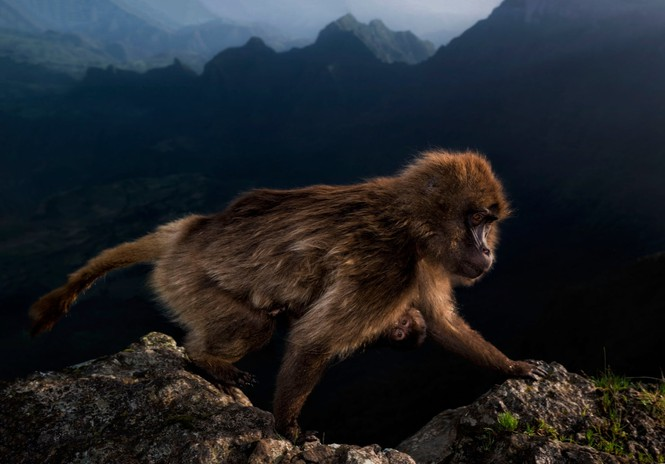

Kawazaki zoo With the open space design, visitors can approach and interact with the zoo's friendly residents through activities such as feeding giraffes, taking photos with antelopes, playing with species. gibbon ... You also have access to and observe the life of wild and rare animals; At the same time, witness the animals raised and reproduced in the semi-wild ecological environment
More specifically, at the Kawazaki zoo, you have the opportunity to observe rare animals such as: Indochinese Tiger, Babbler Ngoc Linh ….
 SunshineMore than 700 wild species live and thrive in the Center Zoo which remains one of the most popular sitter in the city since 1847. But in such a fammous place, it is sometimes difficult to know where to start, here so some leads.
|
1. Penguin beachDiscover the largest penguin pool in England, created to look as much as possible in a South American environment. Admire the Rockhopper Penguins, easily recognizable with their punk cut! |
2. Rainforest wildlifeThe creatures of tropical forests live in a humid environment, that's why a tropical shelter was created specially for these species in the London zoo. Take your time in the midst of adorable and lazy monkeys. |
|---|---|
|
3. NightlifeIn this appendix of tropical fauna, take advantage of a certainly unique opportunity to observe nocturnal creatures! Among these elusive animals, discover armadillos and slow lorises. |
4. The land of giantsGiant tortoises are arguably the most fascinating reptiles and amphibians that you can admire during your visit. |
The Center Zoo in the UK offers many temporary exhibitions and seasonal activities, so be sure to check out the zoo's website in addition to this list to find out which attractions are on offer on the date you want.
You will spend a good part of the day outdoors, so if the sun is shining or even a slightly cloudy sky, make sure you are well protected and remember to drink lots of water.
If you want a really quiet visit, opt for an afternoon during the week, you will avoid the morning rush and many potential visitors will be at work or at school!
Finally, it is important to remember that the zoo is above all the habitat of animals! Even if we can think that they are used to visitors, do not yell at them and do nothing that could annoy them, as for children, be careful that they behave as best as possible.
8 Ton That Thuyet, My Dinh, Tu Liem,
Ha Noi, Viet Nam.
0966469746 (Do Van Huan)
0666729716 (Nguyen Minh Nghia)
0522697743 (Duong Thanh Binh)
0849818969 (Le Van Phuong)
0373485924 (Nguyen Thanh Lam)
KawasakiZoo@gmail.com